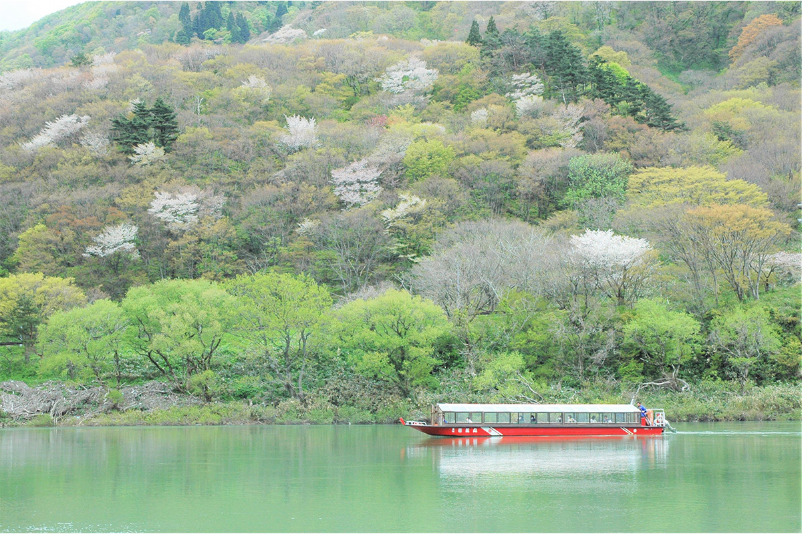
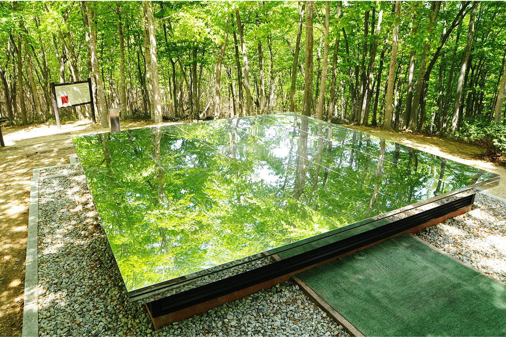
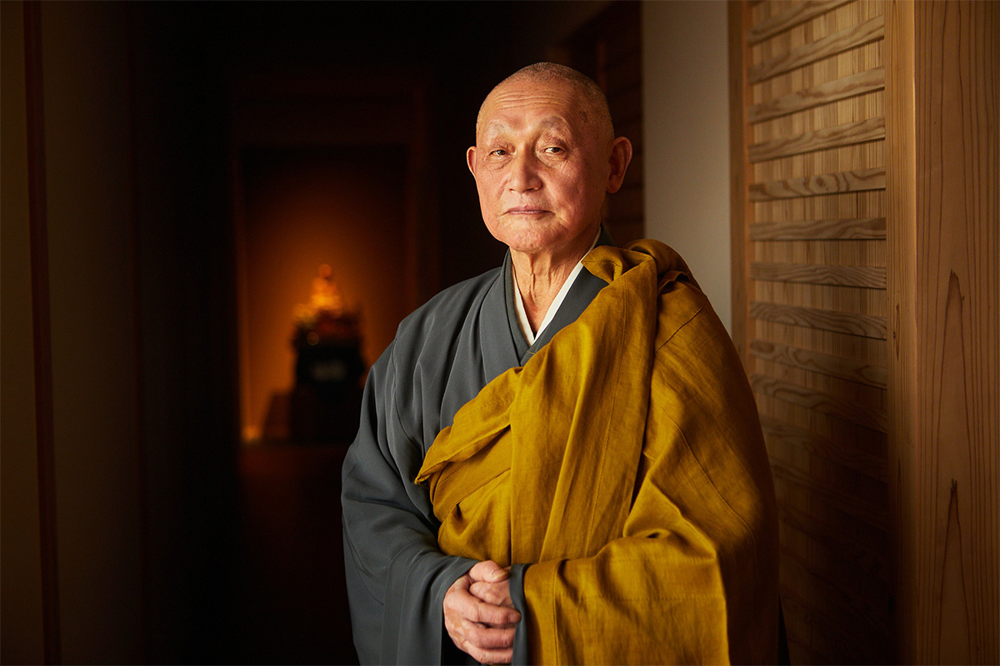
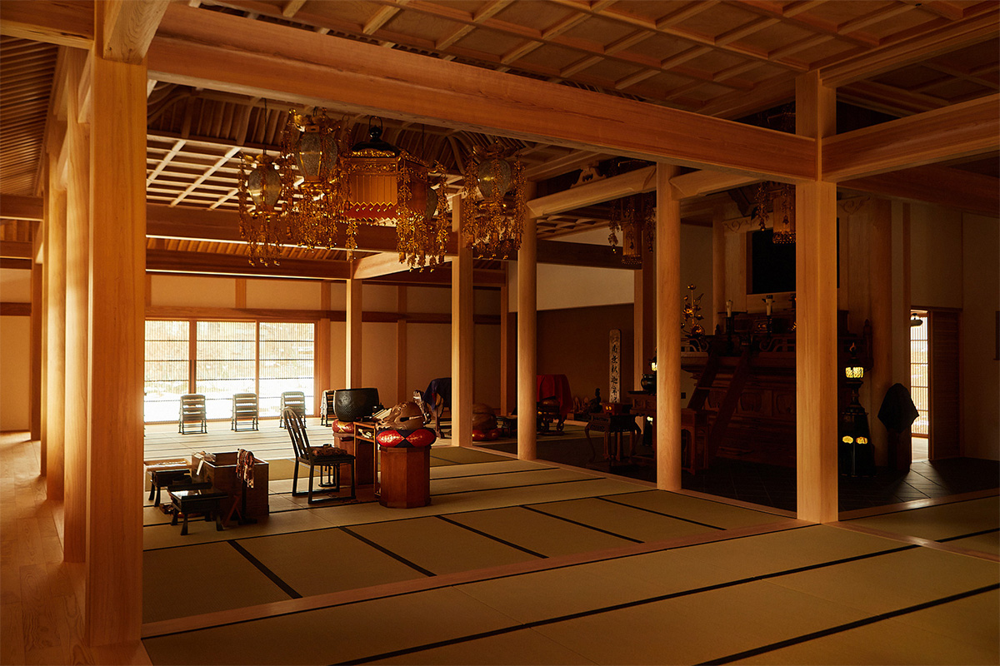
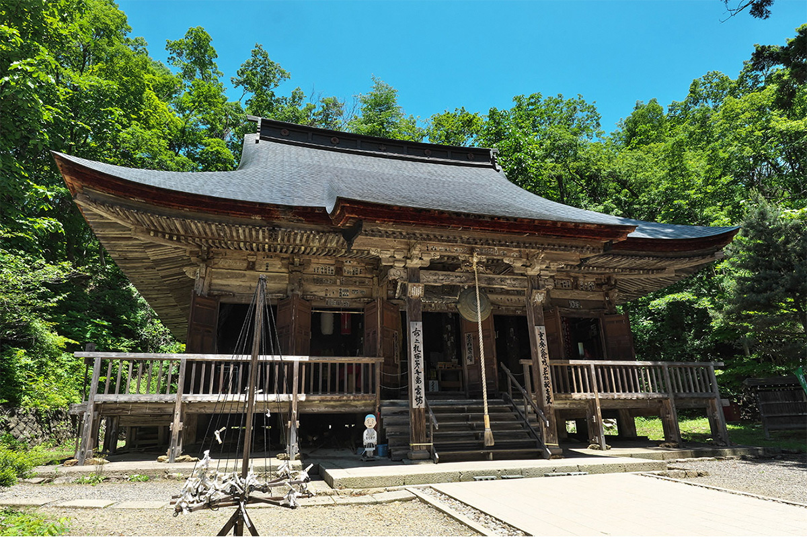
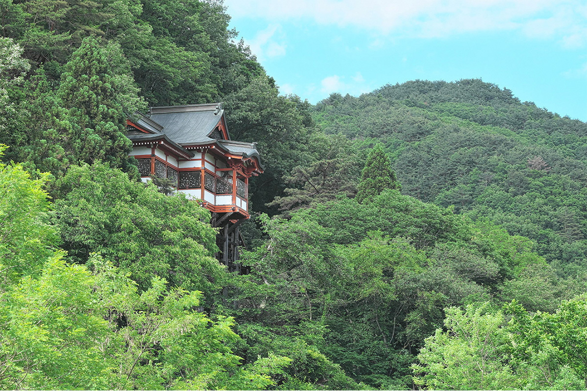
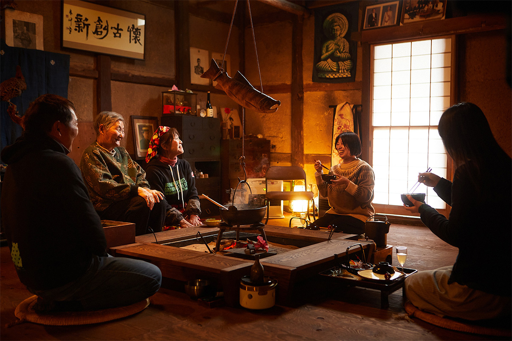
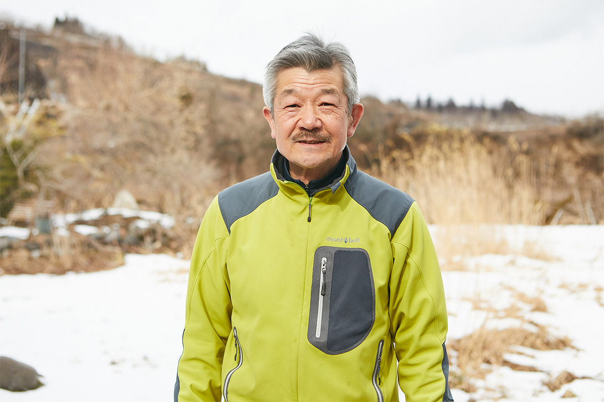
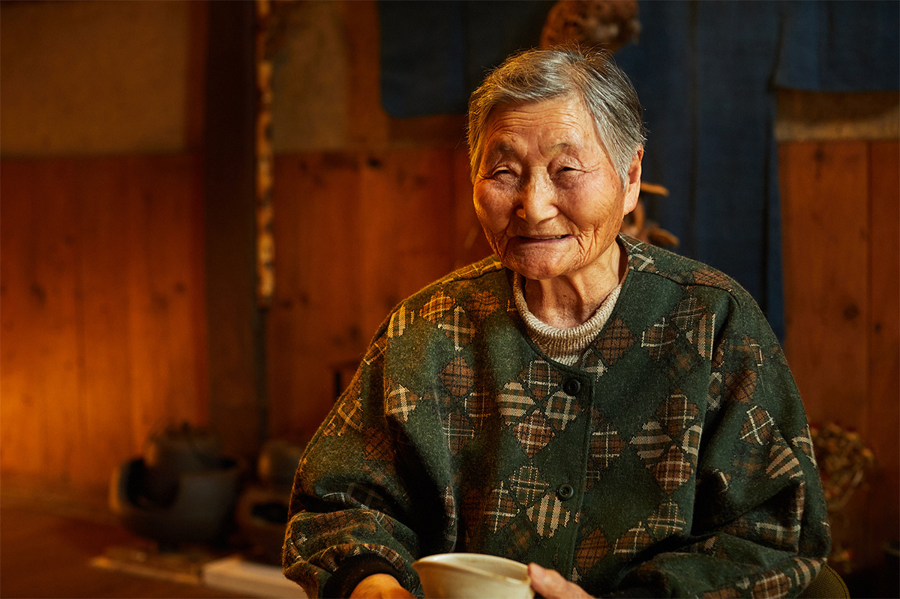
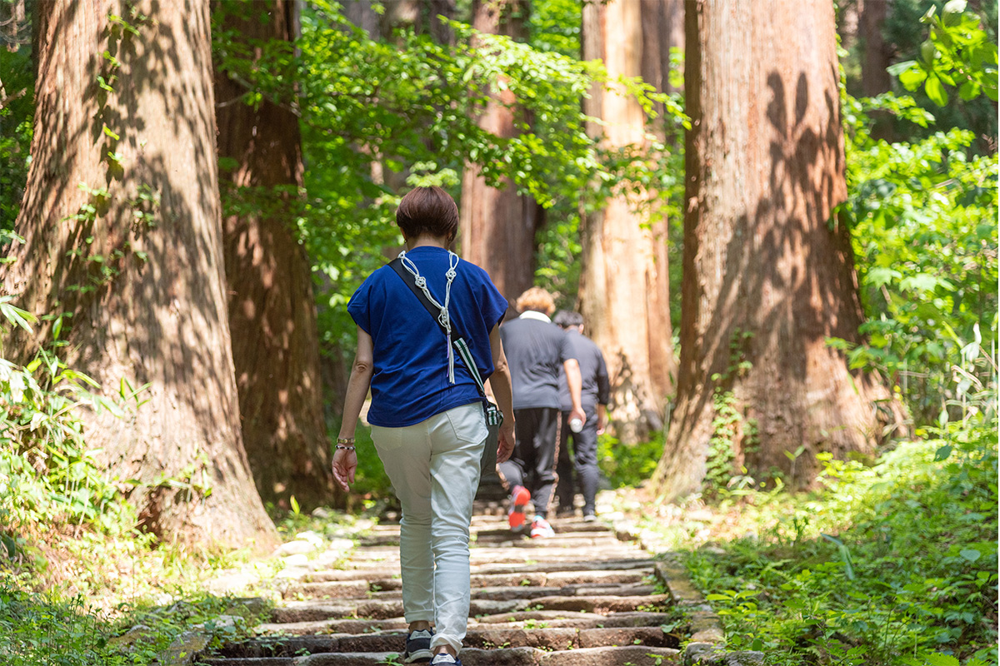

Префектура Ямагата · Могами и Асахи · паломничество и ночёвка на ферме
Храмы Каннон Могами и ночь на ферме: Ямагата глазами её жителей

Местная кухня, сакэ, онсэны, праздники и неторопливая деревенская жизнь держатся в Ямагате на людях, которые веками передают их дальше. Чтобы понять, как устроен этот край, стоит пройти по храмам богини Каннон и переночевать у фермеров.
Край
Четыре Ямагаты
От Токио до Ямагаты около трёх часов на синкансэне «Ямагата». За окном тянутся горные хребты, и к концу пути мысли сами переключаются на дорогу.
Префектура делится на четыре района. Мураяма славится праздниками на любой сезон: весной здесь собирают черешню, осенью устраивают самый большой в Японии пикник с имони, супом из таро. В Могами растут первозданные буковые леса и открываются виды на ущелье Могами. Окитама знаменита говядиной Ёнэдзава и сакэ, а Сёнай сохранил облик старой японской деревни. Со времён княжеств эпохи Эдо у каждого района немного свой говор и свои обычаи.

Жителей Ямагаты в Японии считают трудолюбивыми, честными и терпеливыми, такими их показал и телесериал NHK «Осин». Корни этого характера ищут в финансовых реформах Ёдзана Уэсуги (1751–1822), князя Ёнэдзавы, который поднял из долгов разорённое княжество. С тех пор здесь живо представление о «честной бедности», и потому природа, еда и традиционная культура дошли до наших дней, вписавшись в повседневную жизнь.
Вера
Сто храмов Каннон
Опорой такой жизни во многом служит вера в Каннон, бодхисаттву милосердия. В префектуре есть «сто храмов Каннон Дэва»: так называют вместе три паломнических маршрута, по 33 храма в Могами, Сёнае и Окитаме. Считается, что Каннон приходит на помощь в 33 обликах, отвечая на молитвы людей, поэтому и храмов на маршруте 33, в каждом свой образ богини.

«К нам приходят по любому поводу: просят об исцелении, об успехе на экзаменах, о детях. И молодые, и пожилые. Здешних людей с раннего детства водили к Каннон родители, бабушки и дедушки, поэтому вера в них живёт сама собой»
настоятель храма Тэнтоку-дзи
Тэнтоку-дзи, дзэн-буддийский храм школы Сото в городке Могами, хранит образ «Ё-о тэрасу Каннон», «Каннон, освещающей мир», и входит в маршрут 33 храмов Могами как дополнительный, внеочередной. В зале Каннон стоит сидящая статуя Коясу Каннон, покровительницы детей, с очень мягким, любящим лицом.

У каждого храма маршрута своя песня-молитва, гоэйка, и паломники поют её у алтаря. Гоэйка храма Тэнтоку-дзи говорит о том, что обет Будды освещает мир и потому светильник ещё не погас. По словам настоятеля, в этих краях гоэйка поют и на поминальных службах: слова простые, их может спеть каждый.
«Каннон для нас душевная опора. Когда-то Могами был очень бедным краем, и жители деревень молились Каннон и сами, своими руками, строили ей залы. Поэтому большинство залов здесь скромные, совсем не роскошные. И всё же к ним приходит столько людей: какие бы трудности ни были, Каннон их спасает»
жена настоятеля


Монах Гёки (668–749) ходил по стране, проповедовал и строил мосты и каналы, а позже возглавил буддийское духовенство Японии. Кобо Дайси (774–835), он же Кукай, основал школу Сингон, и ему приписывают множество храмов и статуй по всей стране. Алые столбы и белые стены зала Карамацу Каннон особенно хороши на фоне зелёных гор.
Храм Тэнтоку-дзи (Ё-о тэрасу Каннон)
- Адрес
- префектура Ямагата, уезд Могами, Могами, Мукаимати, 1495
- Телефон
- +81 233-43-3935
- Часы работы
- 7:00–17:00
- Сайт
- mogami33.com
Храм Дзякусё-дзи (Вакамацу Каннон, первый храм)
- Адрес
- префектура Ямагата, Тэндо, Ямамото, 2205-1
- Телефон
- +81 23-653-4138
- Часы работы
- апрель–сентябрь 7:00–17:00, октябрь–март 8:00–16:00
- Сайт
- mogami33.com
Храм Гококу-дзи (Карамацу Каннон, пятый храм)
- Адрес
- префектура Ямагата, Ямагата, Сякадо, 7
- Телефон
- +81 23-629-2405
- Часы работы
- 8:00–17:00
- Сайт
- mogami33.com
Ночёвка
Жить как местные

Чтобы почувствовать Ямагату по-настоящему, через людей, еду и природу, лучше выбрать поездку, в которой живёшь как местный. Для этого не нужно оставаться надолго: хватит и одной ночи.
«Если остановиться в деревне на ночь или две, можно увидеть здешний быт, обычаи, культуру и кухню целиком. В сельских, горных и рыбацких посёлках префектуры много фермерских гостевых домов, и все они очень разные. Помогая хозяевам, гости видят, как связана еда на их столе с полем и морем. И, конечно, знакомятся с людьми и живут так, как живут здесь те, кто всю жизнь провёл рядом с природой»
председатель совета по сельскому туризму префектуры Ямагата

В 2018 году хозяева фермерских гостиниц из этого совета объединились в «Общество фермерских домов». Их гости работают в поле, готовят местные блюда, собирают фрукты и выбираются на природу. Один из таких домов, Daichan Farm Guest House, стоит в городке Асахи в районе Мураяма. Его держит фруктовая ферма Daichan Farm, семья которой занимается землёй уже 450 лет. Гостей встречают по-домашнему: хозяин фермы в десятом поколении, его жена и мать.
Гостевым домом руководит жена хозяина, и многие приезжают снова именно ради неё. Она хорошо знает иностранные языки, полна энергии, и после разговора с ней самому хочется что-то делать.
«Когда работаешь на земле, получаешь силу не только от урожая, но и от самой почвы, от растений. Будто возвращаешься к тому, каким человек должен быть. Хочется, чтобы гости и за одну ночь почувствовали эти дары земли и увезли их с собой. А ещё в Ямагате очень много людей, к которым хочется вернуться»
хозяйка Daichan Farm Guest House

Занятия меняются по сезонам: сбор горных трав, суп с натто, мисо и амадзакэ своими руками, работа в яблоневом саду и на рисовом поле, сбор черешни и яблок. В каждом фермерском доме программа своя, поэтому интересно останавливаться в разных районах. А если добавить прогулку на сапах или каноэ по озеру Сиракава, треккинг, снегоступы или замёрзшие водопады в заснеженных горах, поездка станет ещё богаче.

С каждой поездкой в Ямагате появляются новые знакомые. Пейзаж за окном синкансэна сначала кажется непривычным, а потом начинает напоминать дорогу домой: в Ямагате ждут люди, которые скажут «С возвращением».
Daichan Farm Guest House
- Адрес
- префектура Ямагата, уезд Нисимураяма, Асахи, Таманои, 202
- Телефон
- +81 237-68-2301
- Часы работы
- 8:00–17:00
- Выходные
- нерегулярно
- Цены / Вход
- бронирование через сайт
- Сайт
- daichanfarm.com
Фото: Кэндзи Окадзаки.